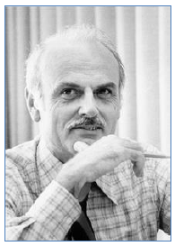
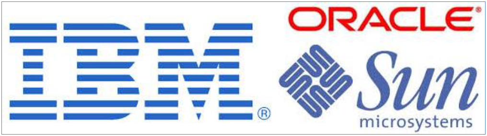

Edgar Frank Codd (Ted Codd), fue un científico informático inglés (1923 - 2003), conocido por sus aportes a la teoría de bases de datos relacionales. En 1970 E. F. Codd propone el modelo relacional y asociado a este modelo de datos, también propone un sublenguaje de acceso a los datos basado en el cálculo de predicados.
Basándose en estas ideas, los laboratorios de IBM definieron el lenguaje SEQUEL. Sin embargo, fue la empresa Oracle quien lo introdujo por primera vez en 1979 en un programa comercial (Larry Ellison diseñó la base de datos Oracle basándose en las ideas de Codd).
El SEQUEL terminaría siendo el predecesor de SQL, siendo este una versión evolucionada del primero. El SQL pasa a ser el lenguaje por excelencia de los diversos SGBD relacionales surgidos en los años siguientes y es por fin estandarizado en 1986 por el ANSI, dando lugar a la primera versión estándar de este lenguaje, el SQL-86 o SQL1. Al año siguiente este estándar es también adoptado por la ISO.

Hoy día, SQL es el estándar de facto de la inmensa mayoría de los sistemas gestores de bases de datos (SGBD) comerciales. Y, aunque la diversidad de particularidades que incluyen las distintas implementaciones comerciales del lenguaje es amplia, el soporte al estándar SQL-92 es general y muy amplio.
Una de las claves del éxito de los SGBD comerciales está relacionada con la independencia en la definición o descripción de datos y la independencia en la manipulación de datos, proporcionadas por el sistema gestor, que se corresponden con la separación de las órdenes de SQL para definir datos (CREATE, DROP, ALTER, etc.) y las órdenes para manipular datos (INSERT, DELETE, UPDATE y SELECT).
Dicho de otra forma, mediante las órdenes de SQL podemos realizar la definición de datos y la manipulación de datos.
El SGBD comercial basado en el modelo de datos relacional por excelencia es ORACLE Database, desarrollado por “Oracle Corporation”, que es considerado un sistema de gestión de base de datos de tipo objeto-relacional (ORDBMS, por el acrónimo en inglés de Object-Relational Data Base Management System). Su dominio en el mercado de servidores empresariales había sido casi total hasta que ha tenido la competencia del SGBD “Microsoft SQL Server” y de la oferta de otros RDBMS con licencia libre como PostgreSQL, MySQL o Firebird.

MySQL es un sistema gestor de bases de datos relacionales, multihilo y multiusuario está considerado como el SGBD más popular del mundo, sobre todo para entornos de desarrollo web.
"MySQL AB", considerada desde enero de 2008 una empresa subsidiaria de "Sun Microsystems" y ésta a su vez de "Oracle Corporation" desde abril de 2009, desarrolla MySQL como software libre en un esquema de licenciamiento dual. Por un lado se ofrece bajo la GNU GPL para cualquier uso compatible con esta licencia, pero para aquellas empresas que quieran incorporarlo en productos privativos deben comprar a la empresa una licencia específica que les permita este uso.
Está desarrollado en su mayor parte en lenguaje de programación ANSI C.
Al contrario de proyectos como “Apache”, donde el software es desarrollado por una comunidad pública y los derechos de autor del código están en poder del autor individual, MySQL es patrocinado por una empresa privada, que posee el copyright de la mayor parte del código.
Esto es lo que posibilita el esquema de licenciamiento anteriormente mencionado. Además de la venta de licencias privativas, la compañía ofrece soporte y servicios. Para sus operaciones contratan trabajadores alrededor del mundo que colaboran vía Internet. "MySQL AB" fue fundado por David Axmark, Allan Larsson y Michael Widenius.
MySQL es usado por muchos sitios web grandes y populares, como “Wikipedia”, “Google” (aunque no para búsquedas), “Facebook”, “Twitter”, “Flickr” y “YouTube”.
En 2009 se creó un fork (una bifurcación en el ámbito del desarrollo de software que consiste en la creación de un proyecto en una dirección distinta de la principal u oficial tomando el código fuente del proyecto ya existente) denominado MariaDB, llevado a cabo por algunos desarrolladores (incluido algunos desarrolladores originales de MySQL) descontentos con el modelo de desarrollo y el hecho de que una misma empresa controle a la vez los productos MySQL y Oracle Database.
MariaDB se considera un sistema de gestión de bases de datos derivado de MySQL con licencia GPL (General Public License), desarrollado por Michael (Monty) Widenius (fundador de MySQL), la fundación MariaDB y la comunidad de desarrolladores de software libre.
Será el SGBD que usaremos en esta unidad y durante todo el curso.